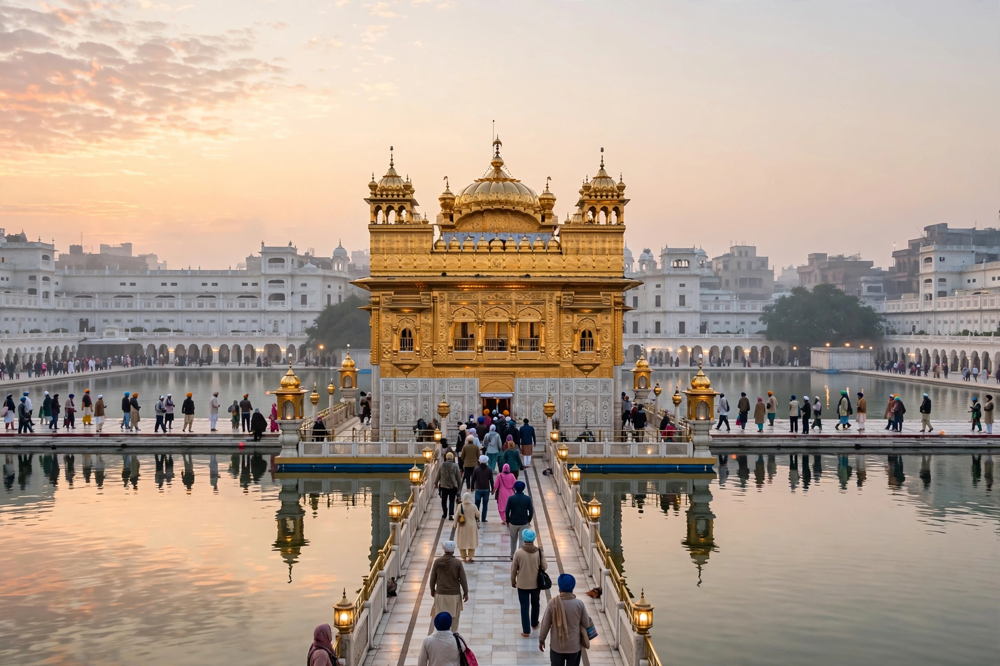

From Wikipedia, the free encyclopedia
| Amritsar | |
|---|---|
| Country | India |
| State | Punjab |
| District | Amritsar |
| Founded | 1577 |
| Founder | Guru Ram Das |
| Population | approx. 1.1 million (city, 2011 census) |

Amritsar is a city in the northwestern Indian state of Punjab, near the border with Pakistan. It is the spiritual and cultural centre of the Sikhism religion, home to the Golden Temple (Harmandir Sahib), the holiest gurdwara and pilgrimage site in Sikhism. The city lies about 28 kilometres east of the Pakistan border and roughly 450 kilometres northwest of New Delhi.
The city was founded in 1577 by the fourth Sikh Guru, Guru Ram Das, around a pool whose name — Amrit Sarovar, "Pool of the Nectar of Immortality" — gave the city its name. Guru Arjan, the fifth Guru, designed the Harmandir Sahib and installed the Adi Granth there in 1604. The city grew as a trading centre under the Sikh Empire of Maharaja Ranjit Singh in the early 19th century, when the temple was rebuilt in marble and gilded with gold leaf.
Amritsar is also remembered for the Jallianwala Bagh massacre of 13 April 1919, when British troops under Brigadier-General Reginald Dyer fired on a large unarmed crowd gathered in an enclosed garden, killing hundreds. The massacre was a turning point in the Indian independence movement. At the Partition of India in 1947 the city became a border city, and it saw heavy fighting in the Indo-Pakistani wars of 1965 and 1971.
The Golden Temple stands in the middle of the sarovar and is approached by a causeway. The temple complex runs the Guru ka Langar, a free community kitchen that serves tens of thousands of visitors daily regardless of faith, often described as the world's largest free kitchen. Amritsar is one of the five seats of Sikh temporal authority, through the Akal Takht, which faces the temple.
Amritsar is known for its textiles, carpets, and its distinctive Punjabi cuisine, including Amritsari kulcha. The Wagah border ceremony, held each evening at the nearby Attari–Wagah crossing with Pakistan, draws large crowds. The city is served by Sri Guru Ram Dass Jee International Airport.